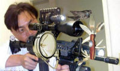

Narcotraficante
 De: La Frikipedia, la enciclopedia extremadamente seria.
De: La Frikipedia, la enciclopedia extremadamente seria.
 Arma basica de cualquier narco.
Tendero habitual en plazoletas y callejones oscuros, normalmente vestido de forma poco cuidada, pero eso es porque son muy humildes y destinan su sábados por la noche.
Como ya hemos comentado, suelen encontrarse en lugares apartados tales como plazoletas abandonadas y callejones oscuros en los que no deben faltar gatos mordiendo huesos de pescado. De cualquier modo, también es posible encontrarlos en lugares más comunes para los narcotraficantes, como en Colombia, Marbella y Barbate.
Teoría de Comercio
El modelo de compra/venta define, dentro de los narcotraficantes, jerarquías según los permisos de conducción que poseas:
- Licencia de ciclomotor (tener una bicicleta también permite acceder a este nivel): Vendedor de barrio, vamos, los relaciones públicas.
- Carnet B (el del coche de tó la vida): Permite hacer portes a media distancia, distribuyendo mercancía entre los vendedores de barrio. Los narcos, al circular en servicio especial, están autorizados a circular por poblado a una velocidad tal, que les permita cruzar Barbate de una punta a otra antes de que al comprador sudamericano de turno se le quiten las ganas de soltar la guita.
- Carnet del barco: ¿Has visto a los narcos cubanos en las lanchas? Pues olvídate, porque el estilo español es usar hidropedales alquilados.
Contactos
Los narcotraficantes suelen tener amigos y conocidos para facilitar su labor evangelizadora por el mundo.
- Portero de discoteca: Indispensable para poder acceder a las lonjas donde vender el stock.
- Policía corrupto: A ningún poli le vienen mal 50 eurillos, y si de paso pasa por alto el doble fondo del maletero, pues mejor.
- Farmacéutico: MUY importante. Los narcotraficantes de pro, tras años de estudios químicos y pruebas de laboratorio y con la ayuda de los farmacéuticos, han conseguido la mezcla perfecta entre
coca cortada hierbas cuidadosamente extraidas de los bosques suizos y aspirinas machacadas para que el sujeto comprador no note que le están vendiendo droga de garrafón hierbas medicinales de segunda clase.
Clientes
Las hierbas medicinales que venden los narcotraficantes son demandadas por todo tipo de personas gracias a sus beneficios, claramente demostrados. De entre los clientes, destacan los más comunes:
Autor(es):
- TheOm3ga
- Bazuke
- Azulejos
- Diegocon13
- Mad Max
- Mayo zambada
- Fictions marilyn
- Sergy25
Frikipedia 2005-2016, Licencia
GFDL 1.2 - Extraído por FrikiLeaks